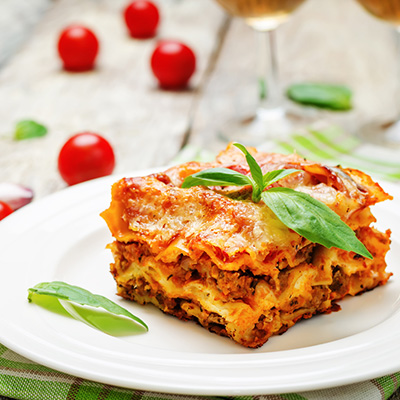

Lasagna
Home

Grandma's Special Lasagna is a hearty, soul-warming dish with layers of tender pasta, rich meat sauce, and creamy cheese that's been perfected through generations of family love. Each bite delivers the comforting flavors and cherished memories that only a grandmother's secret recipe can provide.
Ingredients
Pasta & Cheese:
- 1 box lasagna noodles
- 15 oz ricotta cheese
- 1 egg
- 2 cups shredded mozzarella cheese
- 3/4 cup grated Parmesan cheese
Meat Souce:
- 1 lb ground beef (or half beef, half Italian sausage)
- 1 medium onion, diced
- 3 cloves garlic, minced
- 24 oz marinara sauce
- 6 oz tomato paste
- 1 can (14.5 oz) diced tomatoes
Seasonings:
- 2 tsp dried basil
- 1 tsp dried oregano
- 1 tsp Italian seasoning
- Salt and black pepper to taste
- 2 tbsp fresh parsley, chopped
- 1 tbsp sugar (for the sauce)
- Red pepper flakes
- Fresh basil for garnish
Steps
- Preheat oven to 375°F and cook lasagna noodles according to package directions
- Brown ground beef and onions in a large skillet over medium heat
- Add garlic and cook for 1 minute until fragrant
- Stir in marinara sauce, tomato paste, diced tomatoes, and seasonings
- Let sauce simmer for 10-15 minutes
- Mix ricotta cheese with egg and half the mozzarella in a bowl
- Spread a thin layer of meat sauce in bottom of 9x13 baking dish
- Layer 3-4 lasagna noodles over the sauce
- Spread half the ricotta mixture over noodles
- Add half the remaining meat sauce
- Repeat layers: noodles, remaining ricotta, remaining meat sauce
- Top with final layer of noodles
- Cover with remaining mozzarella and Parmesan cheese
- Cover with foil and bake for 25 minutes
- Remove foil and bake 10-15 minutes until cheese is golden
- Let rest for 10 minutes before serving